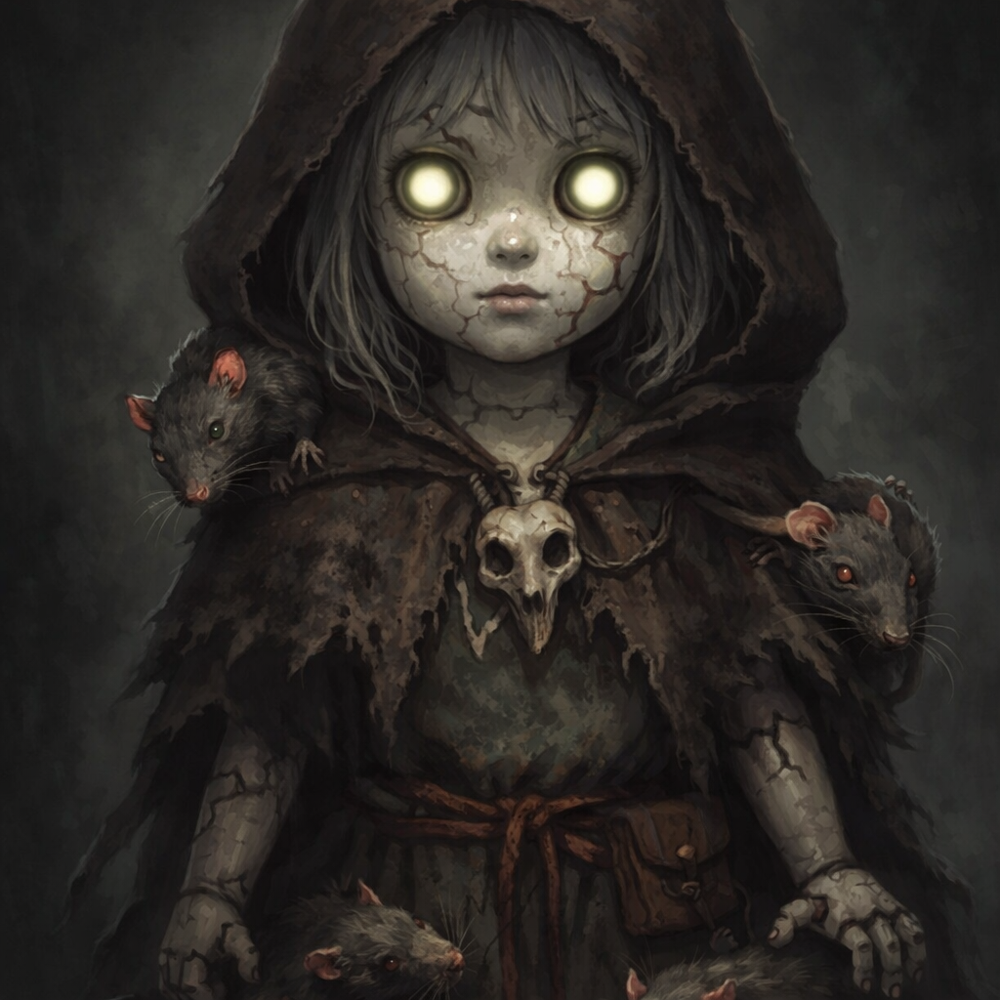

Mistwalker I
Thimble
The Hollow Child
She wears a borrowed face with practiced warmth, but something beneath her ribs still scratches at the edges of the world. The rats knew first. They have never stopped listening.
In the Mists of Radjya, few walk by choice. Fewer still return unchanged. These are the Mistwalkers, bound to paths that shift beneath their feet, carrying burdens the Mists refuse to forget.

She wears a borrowed face with practiced warmth, but something beneath her ribs still scratches at the edges of the world. The rats knew first. They have never stopped listening.

Corruption did not merely touch him. It rooted, spread, and learned his name. What remains walks still, carrying decay not as a burden, but as a patient companion.

Some lights are kind enough to guide the lost. Others reveal the shape of what was already waiting just beyond the veil. Umashi walks where both truths meet.

Not every story arrives with a face. Some are still being shaped in the dark, where breath fogs cold air and the mist makes room for one more name.